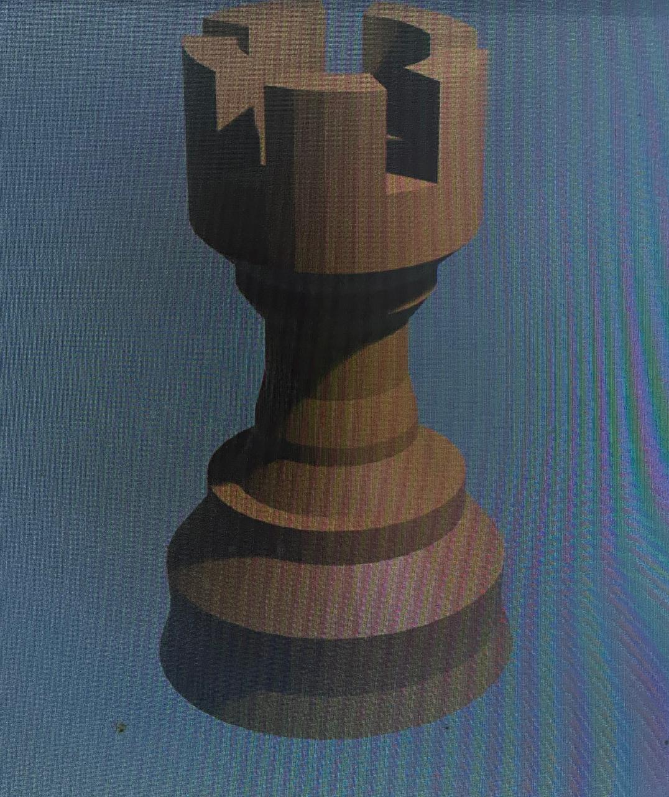
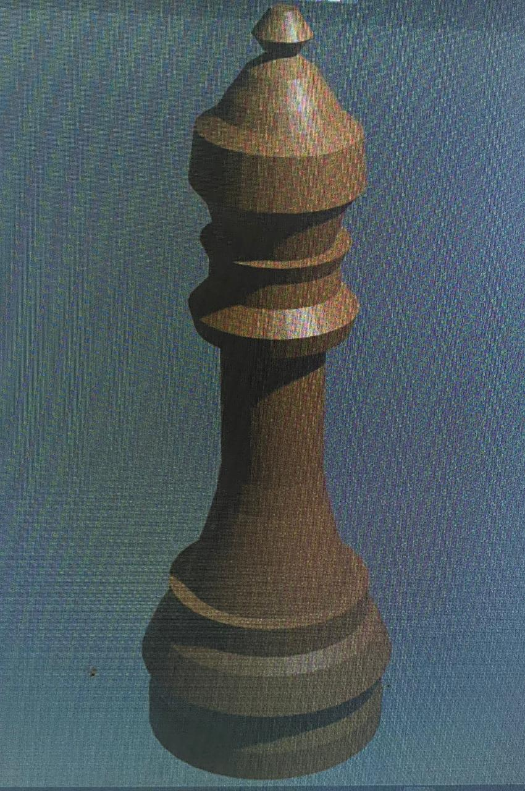
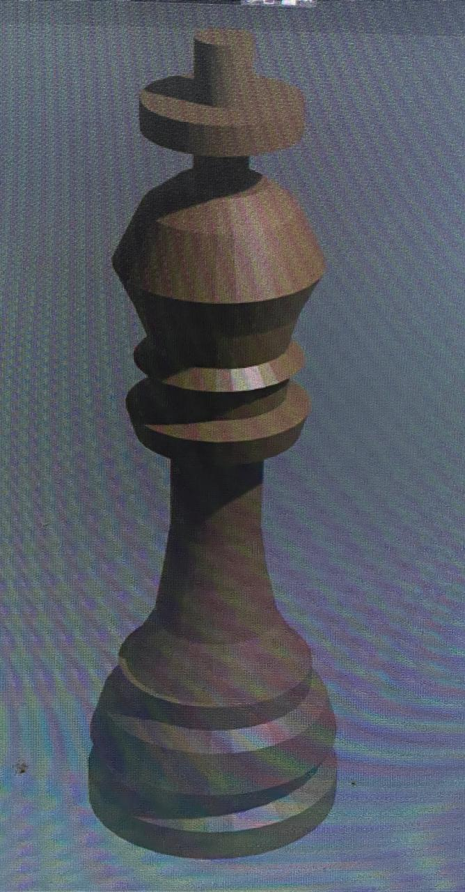
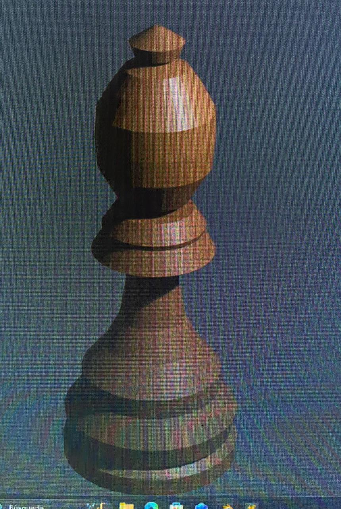
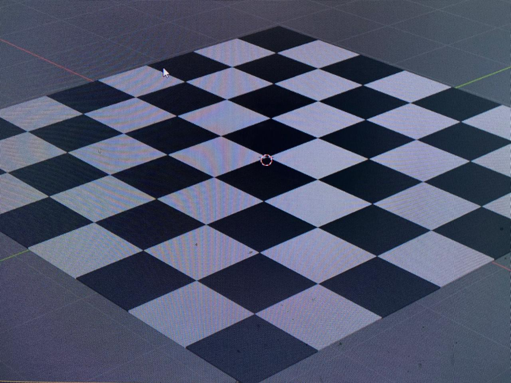
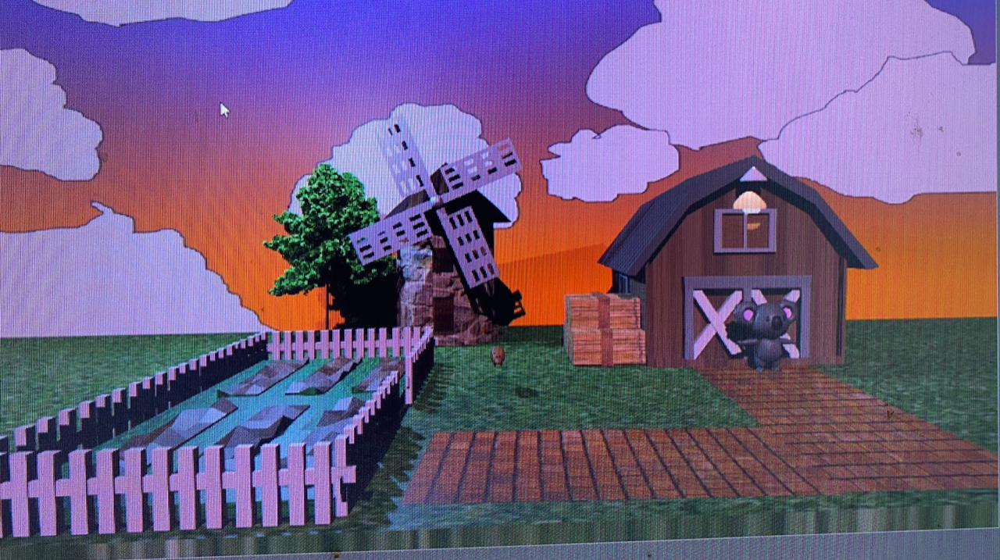
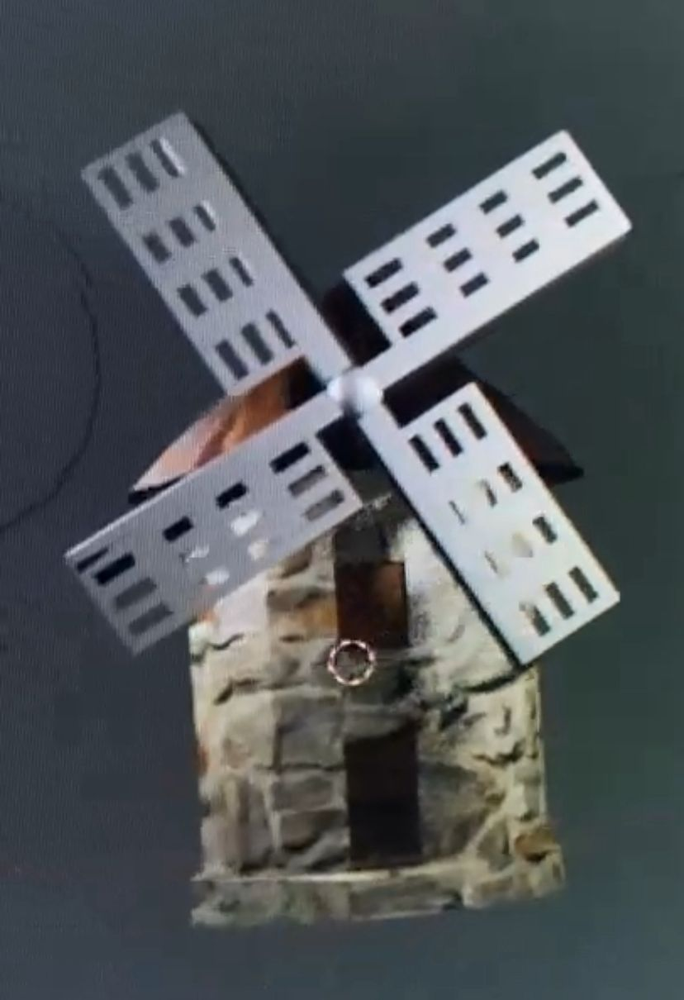
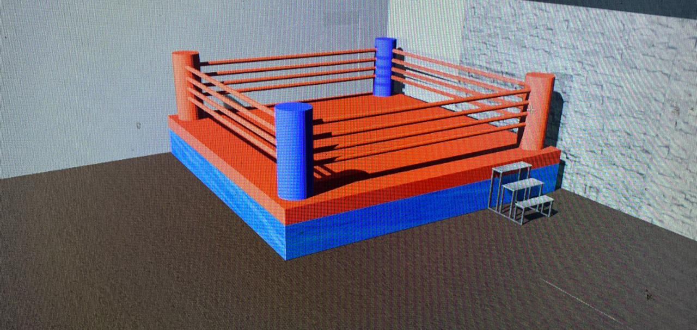
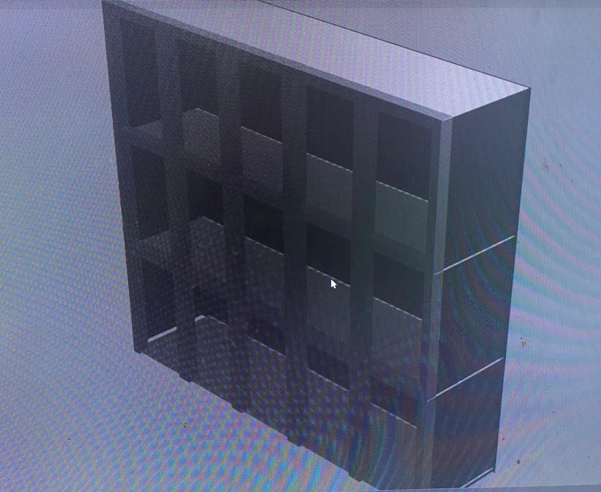

Mis mundos virtuales
Seúl,Corea

En este entorno, modele la "Torre N de Seúl, tambien conocida como Torre Namsan, es un icónico mirador y torre de comunicación en la cima del monte Namsan en Seúl. Al igual se puede observar el "Pabellón Octagonal de Namsan" y a un lado una breve representación de una casa tipica de Seúl Corea. Anexando a su alrededor un "Cerezo de flor", una de las especies silvestres de cerezos nativo de japón.
Ajedrez
    En este proyecto modelé un juego de ajedrez completo en Blender, conformado por las principales piezas: torre, alfil, caballo, rey y dama, junto con su tablero. Cada figura fue diseñada cuidando su forma clásicas, aplicando materiales con acabados de madera para darles un aspecto realista. Este trabajo me permitió practicar el modelado por simetría, las proporciones geométricas y el uso de texturas. y asi poder lograr un resultado visualmente estetico.
Animación Koala
 En este entorno desarrollé una pequeña animación ambientada en una granja, protagonizada por un koala. El escenario incluye una casa de campo, un molino y elementos naturales como árboles. Este proyecto combina modelado 3D, texturizado e iluminación para crear una atmósfera cálida y natural. La animación del koala permitió explorar el uso de rigs básicos y el movimiento de cámaras dentro de Blender, mejorando mi comprensión del flujo de trabajo en animación 3D.
Parque

En este modelado representé un parque con áreas verdes, árboles, caminos, faros, basureros, una fuente y una montaña al fondo. El objetivo fue crear un entorno natural aplicando distintas técnicas de modelado y la distribución de objetos. A través de la iluminación ambiental y el uso de colores suaves, se buscó transmitir una sensación de tranquilidad y conexión con la naturaleza. Este proyecto fortaleció mis habilidades en la composición de escenas.
Gimnasio
 En este modelado diseñé un gimnasio que incluye un cuadrilátero de box, casilleros y un area de baños, simulando un ambiente deportivo interior. El proyecto se enfocó en la construcción de objetos con formas geométricas precisas y la correcta aplicación de materiales metálicos y plásticos. También trabajé la iluminación interior para resaltar los colores del ring y generar sombras realistas. Este modelado me ayudó a comprender la importancia del espacio, escala y ambientación dentro de un entorno cerrado.